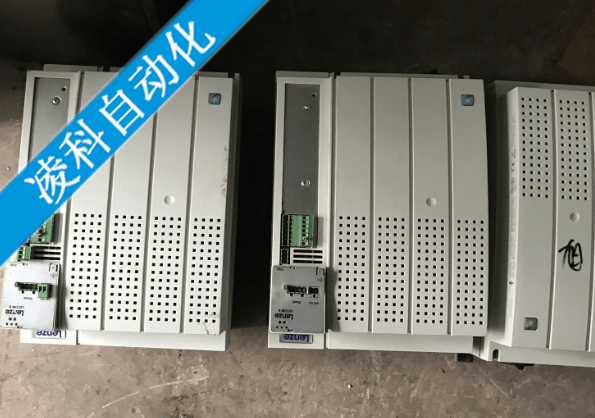
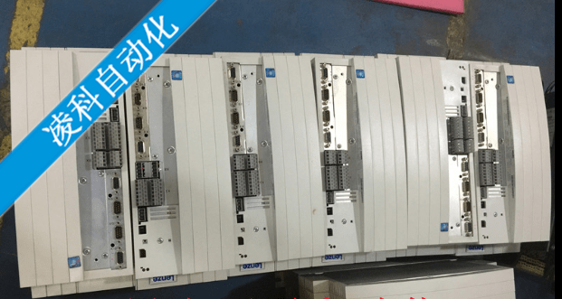
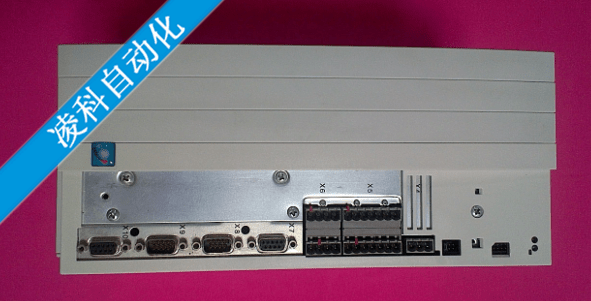

伦茨变频器维修、LENZE伦茨伺服器维修、伦茨驱动器维修、伦茨直流调速器维修、伦茨电源维修、伦茨驱动器维修。
伦茨变频器维修常见的故障有：CE、CE3、EEr、LP1、Lu、OC1、OC5、PEr、PI、SD2、OH、无显示、亮红灯等。
Lenze伦茨变频器EVS9300系列/Lenze变频器维修资料
LENZE伦茨变频器是德国品牌，自2002年始就中国上海生产。是驱动的领跑者。
LENZE变频器维修专家 LENZE变频器维修学者 LENZE变频器维修过程，LENZE变频器维修经验 LENZE变频器维修案例 LENZE变频器维修技术 LENZE变频器维修方法 LENZE变频器维修理念 LENZE变频器维修概念 LENZE变频器维修技巧 LENZE变频器维修资料 LENZE变频器维修原理
伦茨变频器维修中心专业维修伦茨变频器系列产品：EVF8222 EVF8240 EVF9300 EVF8200 EVF82 EVF93 E82EV EVS9300-ES EVS9300-EP 变频器维修及伺服驱动器维修
伦茨变频器维修中心维修伦茨变频器的常见故障：无显示、缺相、过流、过压、欠压、过热、过载、接地、参数错误、有显示无输出、模块损坏、更换配件等
一、LENZE伦茨变频器维修介绍：
LENZE伦茨变频器是德国的一个品牌变频器，LENZE变频器2002年左右进入中国市场，早期以EVF82系列为主，EVS93系列主要配机而来，目前在印染行业和电梯用量较大。该系列变频器特别是小功率变频器，其逆变部分为输出功率管，在驱动板损坏时，容易引起功率管的损坏。其主板通信CPU及陶瓷小板损坏情况亦较常见。而陶瓷小板的维修需注意，由于部分元器件都焊接在陶瓷片上，散热相当快，特别注意不要把烙铁加热于元器件上而导致元器件的损坏。
LENZE伦茨变频器由于电路板比较密，电路板上还有厚厚的图层，维修比较麻烦。

二：伦茨变频器维修中心业务承接范围：
上海伦茨变频器维修/浙江伦茨变频器维修/江苏伦茨变频器维修/ 福建伦茨变频器维修/ 江西伦茨变频器维修 /安徽伦茨变频器维修/山东伦茨变频器维修/河南伦茨变频器维修/湖北伦茨变频器维修/湖南伦茨变频器维修/河北伦茨变频器维修/
三上海伦茨变频器维修中心有大量伦茨变频器配件：
主机板、控制板、电源板、整流模块、功率模块、操作器、三线散热风扇等，有全新的、有拆机的，规模大、品种齐、价格低。在伦茨变频器维修中可快递复。
四：伦茨变频器维修流程：
免费检测–报价–故障维修–带负载测试–电路喷漆处理–带负载检验合格–入仓出仓–跟踪服务
外地客户维修变频器可以通过【速递公司】（推荐使用顺丰及申通快递发给我们），紧急客户也可亲自携带到本公司维修部当面维修，当天维修OK，速度快、收费低。
因其它原因不继续维修的客户,即按原机返还.、
LENZE变频器维修专家 LENZE变频器维修学者 LENZE变频器维修过程，LENZE变频器维修经验 LENZE变频器维修案例 LENZE变频器维修技术 LENZE变频器维修方法 LENZE变频器维修理念 LENZE变频器维修概念 LENZE变频器维修技巧 LENZE变频器维修资料 LENZE变频器维修原理
五：德国Lenze伦茨变频器EVS9300系列/Lenze变频器维修资料
LENZE伦茨变频器维修故障代码解析：
E.OP 过压故障: 直流电路过压 可能原因: 1) 输入电压太高: 使用变压器; 2) 电源输入电压峰值太高: 使用5%输入电抗器; 3) 制动电阻没有连接; 4) 制动电阻的阻值不正确: 重新估算电阻值; 5) 连接电阻的电缆线受损坏或连接不正确; 6) 变频器接地不良.
E. 欠压故障: 直流电路欠压 可能原因: 1) 输入电源电压太低或不稳定; 2) 输入接线错误; 3) 输入端变压器太小, 或接线不正确; 4) 所有的输入缺相。

E.OC过流故障： 瞬时电流超过0C触发限值 可能原因：1）电机绕组或电机线出现短路；2） 电机绕组或电机线出现接地故障；3）主接触点烧坏或有问题，由此产生了瞬时电火花；4） 变频器接地不良；5）电机参数设置有误（在dr 参数组）；6） 在运行时安全回路不稳，例如：接触门点等；7） 功率模块短路。E.OHError inverter overheat 8 过热故障： 变频器散热器温度超过允许限值 可能原因： 1）变频器的散热不足：需改进变频器的空气流通；2） 外部温度太高：控制柜需加装风扇；3） 风扇粘住：需清理风扇。
E.dOH 电机过热故障： 外置电机温度传感器过热触发和预警时间（LF。65）已过 可能原因：1） 在端子间的电阻OH/OH值>1650欧；2） 电机温度传感器触发；3）如无温度传感器连接，可能是OH/OH短接线不良或松脱。
E.O过载故障： 持续过载，变频器带电冷却，冷却时间由之前的过载时间而定 可能原因：1）电机输入电压不对；2）电机参数设置不正确（dr参数组）；3）变频器容量太小；4）对重太重，引起高机械负载；5）由于抱闸部分打开或完全没打开，减速箱故障，减速箱里没有机油等到原因，引起高的机械摩擦。E.nOLError no overload 17 无过载状态： 故障E。OL或E。OL2后变频器已冷却下来，故障可被复位，变频器可再次起动。
E.EnC 编码器故障： 可能原因：1）编码器没有连接到变频器上；2） 编码器同电机轴没装紧；3） 编码器相序被改变（EC。02）；4） 编码器的分辩率设置不正确（EC。01）；5） 编码器电缆的针号配接不正确；6） 编码器或其电缆损坏；7） 编码器的屏蔽太差或没有在两端接地；8） 编码器电缆与电机电缆平行走线；9） 变频器和电机的接线相序分配有误（仅对同步机）；10）位置学习未起动（仅对同步机）；11） 电机接地太差或根本没接地；12） 变频器接地太差或根本没接地；13）配异步机时，在dr。01参数里设置了同步转速；14） 由于抱闸仅部分打开或根本没打开，减速（齿轮）箱故障，减速（齿轮）箱里没有机油等原因，引起很高的机械磨擦。
德国Lenze伦茨变频器EVS9300系列/Lenze变频器维修资料
伦茨变频器维修专家 伦茨变频器维修学者 伦茨变频器维修过程，伦茨变频器维修经验 伦茨变频器维修案例 伦茨变频器维修技术 伦茨变频器维修方法 伦茨变频器维修理念 伦茨变频器维修概念 伦茨变频器维修技巧 伦茨变频器维修资料 伦茨变频器维修原理
LENZE变频器维修专家 LENZE变频器维修学者 LENZE变频器维修过程，LENZE变频器维修经验 LENZE变频器维修案例 LENZE变频器维修技术 LENZE变频器维修方法 。

德国伦茨（LENZE）变频器产品维修
1、 产品维修（故障检测、软件升级，硬件维修）：LENZE、全系列产品厂家定点维修；提供24小时现场及时响应技术服务：故障诊断排除、备件更换、现场硬件维修；
2、 温馨提示：为了不影响客户生产，我们可以为客户提供故障机器替换使用，确保客户正常生产，
3、 产品培训：提供电气和机械产品从产品介绍、选型、调试、设备维护、现场故障诊断排除等培训；
4、 库存销售：公司备有伦茨变频器、伺服控制器；减速电机等丰富库存；*时间为客户解决现场问题；
我公司主要经营变频器、伺服驱动器、电机、减速机、制动器、离合器、电抗器、系列直流调速器、软启动器、工控机、油泵、工业PC、气动元件、液压元件、编码器，泵阀系列等。
伦茨93xx系列变频器故障报警
一、面板显示信息
RDY=驱动系统准备好了，可停止控制器
IMP=功率输出脉冲禁止
Imax=达到大电流
Mmax=达到大转矩
Fail=故障、跳闸、警告

二、伦茨变频器维修故障报警信息（参数c0168是当前故障信息存储，有8个）
Ccr 071系统故障 跳闸
Ceo 061 通讯错误 数据错误
cde（220/221）通讯错误 数据错误
c0126Ce1 062过程数据输入对象can-in1通讯错误
Ce2 063过程数据输入对象can-in2通讯错误 监控关闭c0592
CE3 064过程数据输入对象can-in3通讯错误 监控关闭c0593
Ce4 065总线关闭状态（错误过多所致 监控关闭c095
Eer 091外部监控 跳闸c0581
H05 105内部故障 跳闸
H07 107内部故障 跳闸
H10 110 散热器温度报警 跳闸c0588
H11 111 室温报警 跳闸 c0588
Lp1 032 电机缺相 监控关闭c0597
Lu 030欠压
Nmax 200 超速 跳闸
Oc1 011 短路 跳闸
Oc2 012接地 跳闸
Oc5 015 Ixt过载 跳闸
Oh 050 散热器过温 跳闸
Oh3 053 电机温度过温 跳闸 c0583
Oh4 054 散热器温度过温（设c0122）报警 c0582
Oh7 057 电机温度过温2（设c0121）报警 c0584
Oh8 058 Ti/t2输入电机固定温度 监控关闭c0585
Ou 020 母线过压 警告
伦茨变频器维修，故障代码型号大全
Po1 151 负向限位开关=低 快停 c1285/1
Po2 152正向限位开关=低 快停 c1285/2
Po3 153 跟踪误差-数字频率c0255 警告 c0589
Po4 154超出负向限位 快停 c1285/3
Po5 155超出正向限位 快停 c1285/4
Po6 156无参考零点 快停 c1287/1
P07 157参数集模式 快停 c1291/1
Po8 158实际偏置超范围 快停 c1291/2
Po9 159非法编程 快停 c1291/3
P12 162 超出编码器范围 快停 c1288/1
P13 163相位溢出 跳闸 c0590
P14 164跟随误差pos大于c1218/1 快停
P15 165跟随误差pos大于c1218/2 监控关闭c1286/2
P16 166同步错误 快停 c1290/1
P17 167 Tp控制错误 快停 c1289/1
P18 168内部限制 警告 C1289/2
PER 171程序错误 跳闸
PI 079初始化错误 跳闸
Pr0 075参数集一般错误 跳闸
Pr1 072参数集1错误 跳闸
Sd2 082旋转变压器错误 跳闸 c0586
Sd3 083 X9 pin8处编码器故障 监控关闭 c0587
Sd5 085 X6/1×6/2处编码器故障（c0034=1） 监控关闭 c0598
Sd6 086 传感器故障：电机温度断口x7或x8 跳闸 c0594
Sd7 087 X8端口处编码器故障 监控关闭 c0025